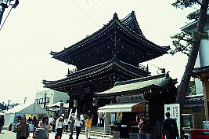
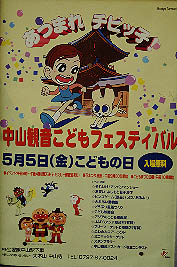
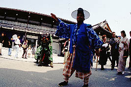
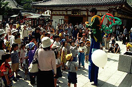
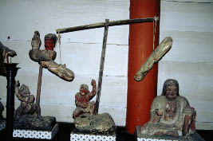
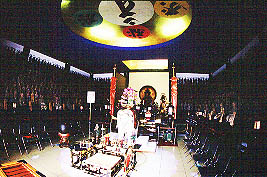
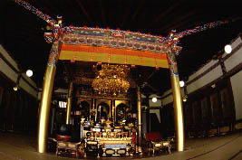
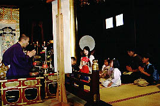

中山寺/兵庫県宝塚市
さる5月5日、私は妻子を連れて宝塚市の中山寺を訪れた。
「子供の日ぐらい子供が喜ぶところに連れてってやらんかい！」の声も聞こえてきそうだが、御心配なく。
ウチの子供達は幼い頃からの素晴らしい情操教育の成果により休日の娯楽と言えば寺巡りと思い込んでいるのだ。
もはやオウムの洗脳とか批判できんな。
で、この中山寺、安産＆子育祈願の寺として関西一円にその名をはせている寺である。

山門に到るとやけに騒々しい。GW中だからある程度の混雑は予想したいたが、それにしても人出が多い。

見ると「こどもフェスティバル」なるものが開催されているではないか。さすが子育ての寺。
予想外の展開に戸惑いつつも受付に行く。息子達の名前をエントリーすると紙と色鉛筆とカードを渡される。
これはちびっこ写生コンテストの用紙と境内スタンプラリーの台紙である。
早速スタンプを探して境内を歩き回る。
境内では獅子舞が練り歩いておりそれに噛まれると1年間、病気しないという。赤ちゃんなんかは絶叫してました。
うたい文句につられて3回程噛んでもらった。これで向こう3年は病気に罹らないぞ。

信徒会館ではアジアンフェスティバルと称してアジアの民芸品などを売るフリーマーケットが開催されていた。それにしてもこういったフリーマーケットとかってなんでその国の人がいないんだろう。
アジアンフェスティバルと銘打ったからにはインドの人がカレー作ってたりとか、カンボジアの人が民芸品売ってたりとかの方が絶対楽しいのに・・・売り子はだいたいその国にかぶれちゃった「いかにも」な人達だったりする。もう少しアジア気分を満喫させて頂きたいもんである。
その他、吉本若手芸人ショーやアンパンマンショー、動物おさわりコーナーなど子供向けイベントが充実。私も久々に家族サービス的な事をしてやれたような気がする。もちろん合間合間に各お堂のチェックは欠かさなかったが。

で、息子達は絵を描き始めた。描いているのは閻魔堂の中の閻魔大王の絵である。さすが我が息子、
渋い。これまた幼い頃からの素晴らしい情操教育の成果である。一説にはそこが一番空いていたからという説もあるが。

地獄行き判定装置か？
境内には五百羅漢堂や地下万体仏など魅力的なアイテムが揃っているが、どれも新しく出来たもので面白味には欠ける。本堂や大師堂といったあたりは比較的旧い建物であるが細かい模様などが彩色されておりこちらの方が印象深かった。

一通り歩いた結果、スタンプカードには「オンマカキャロニアソワカ」という渋い文字が揃った。それを持って本堂へ。すると子供達、坊さんの前に座らされ「オンマカキャロニアソワカ〜」と唱えさせられている。これで本日の中山寺参りは終了。

このように寺院で開催されるイベントというものは私は大好きだ。
日頃から参拝と娯楽について深い感心をよせている私としては毎日やって頂いても結構な位である。
特にスタンプラリーなどは子供達が楽しみながら信仰を理解していくという点で注目に値する。これは栄螺堂等に通じる娯楽型参拝システムと言えるのではないだろうか。
これもまたお寺の考えた素晴らしい洗脳、じゃなくて情操教育のひとつといえるだろう。
最後に息子よ、健康ランドのうたせ湯で合掌して「オンマカキャロニアソワカ〜」とつぶやくのは止めてくれ。気持ち悪すぎるぞ。
2000.5.
珍寺大道場 HOME